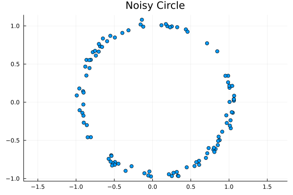
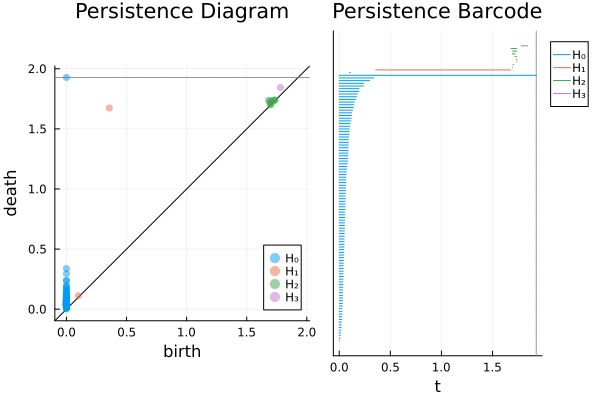
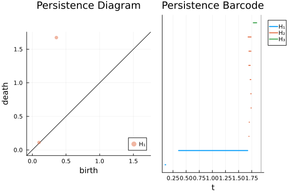
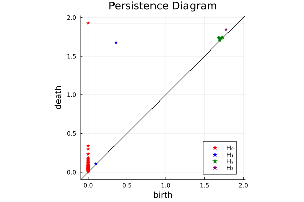
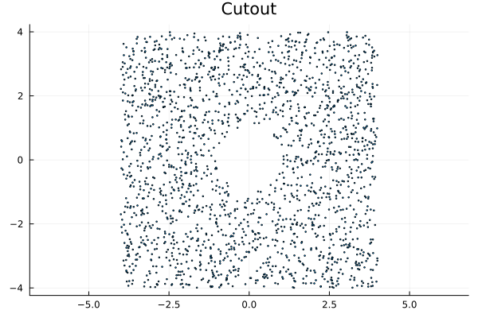
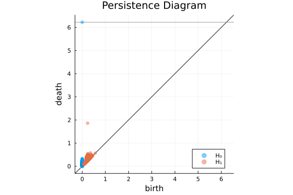
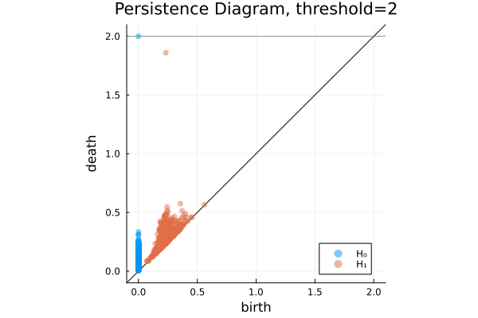

Usage Guide
In this example, we will present the basics of using Ripserer. We start by loading some packages.
using Distances
using Plots
using RipsererUsing Ripserer With Point Cloud Data
Let's start with generating some points, randomly sampled from a noisy circle.
function noisy_circle(n; r=1, noise=0.1)
points = NTuple{2,Float64}[]
for _ in 1:n
θ = 2π * rand()
push!(points, (r * sin(θ) + noise * rand(), r * cos(θ) + noise * rand()))
end
return points
end
circ_100 = noisy_circle(100)
scatter(circ_100; aspect_ratio=1, legend=false, title="Noisy Circle")
Ripserer can interpret various kinds of data as point clouds. The limitation is that the data set should be an AbstractVector with elements with the following properties:
- all elements are collections numbers;
- all elements have the same length.
Examples of element types that work are Tuples, SVectors, and Points.
To compute the Vietoris-Rips persistent homology of this data set, run the following.
ripserer(circ_100)2-element Vector{PersistenceDiagram}:
100-element 0-dimensional PersistenceDiagram
2-element 1-dimensional PersistenceDiagramYou can use the dim_max argument to set the maximum dimension persistent homology is computed in.
result_rips = ripserer(circ_100; dim_max=3)4-element Vector{PersistenceDiagram}:
100-element 0-dimensional PersistenceDiagram
2-element 1-dimensional PersistenceDiagram
8-element 2-dimensional PersistenceDiagram
1-element 3-dimensional PersistenceDiagramThe result can be plotted as a persistence diagram or as a barcode.
plot(result_rips)
barcode(result_rips)
We can also plot a single diagram or a subset of all diagrams in the same manner. Keep in mind that the result is just a vector of PersistenceDiagrams. The zero-dimensional diagram is found at index 1.
plot(result_rips[2])
barcode(result_rips[2:end]; linewidth=2)
Plotting can be further customized using the standard attributes from Plots.jl.
plot(result_rips; markeralpha=1, markershape=:star, color=[:red, :blue, :green, :purple])
Changing Filtrations
By default, calling ripserer will compute persistent homology with the Rips filtration. To use a different filtration, we have two options.
The first option is to pass the filtration constructor as the first argument. Any keyword arguments the filtration accepts can be passed to ripserer and it will be forwarded to the constructor.
ripserer(EdgeCollapsedRips, circ_100; threshold=1, dim_max=3, metric=Euclidean())4-element Vector{PersistenceDiagram}:
100-element 0-dimensional PersistenceDiagram
2-element 1-dimensional PersistenceDiagram
0-element 2-dimensional PersistenceDiagram
0-element 3-dimensional PersistenceDiagramThe second option is to initialize the filtration object first and use that as an argument to ripserer. This can be useful in cases where constructing the filtration takes a long time.
collapsed_rips = EdgeCollapsedRips(circ_100; threshold=1, metric=Euclidean())
ripserer(collapsed_rips; dim_max=3)4-element Vector{PersistenceDiagram}:
100-element 0-dimensional PersistenceDiagram
2-element 1-dimensional PersistenceDiagram
0-element 2-dimensional PersistenceDiagram
0-element 3-dimensional PersistenceDiagramDistance Matrix Inputs
In the previous example, we got our result by passing a collection of points to ripserer. Under the hood, Rips and EdgeCollapsedRips actually work with distance matrices. Let's define a distance matrix of the shortest paths on a regular icosahedron graph.

icosahedron = [
0 1 2 2 1 2 1 1 2 2 1 3
1 0 3 2 1 1 2 1 2 1 2 2
2 3 0 1 2 2 1 2 1 2 1 1
2 2 1 0 3 2 1 1 2 1 2 1
1 1 2 3 0 1 2 2 1 2 1 2
2 1 2 2 1 0 3 2 1 1 2 1
1 2 1 1 2 3 0 1 2 2 1 2
1 1 2 1 2 2 1 0 3 1 2 2
2 2 1 2 1 1 2 3 0 2 1 1
2 1 2 1 2 1 2 1 2 0 3 1
1 2 1 2 1 2 1 2 1 3 0 2
3 2 1 1 2 1 2 2 1 1 2 0
]To compute the persistent homology, simply feed the distance matrix to ripserer.
result_icosa = ripserer(icosahedron; dim_max=2)3-element Vector{PersistenceDiagram}:
12-element 0-dimensional PersistenceDiagram
0-element 1-dimensional PersistenceDiagram
1-element 2-dimensional PersistenceDiagramThresholding
In our next example, we will show how to use thresholding to speed up computation. We start by defining a sampling function that generates $n$ points from the square $[-4,4]\times[-4,4]$ with a circular hole of radius 1 in the middle.
function cutout(n)
points = NTuple{2,Float64}[]
while length(points) < n
x, y = (8rand() - 4, 8rand() - 4)
if x^2 + y^2 > 1
push!(points, (x, y))
end
end
return points
endcutout (generic function with 1 method)We sample 2000 points from this space.
cutout_2000 = cutout(2000)
scatter(cutout_2000; markersize=1, aspect_ratio=1, legend=false, title="Cutout")
We calculate the persistent homology and time the calculation.
@time result_cut = ripserer(cutout_2000) 4.512684 seconds (13.43 k allocations: 1.228 GiB, 18.12% gc time)plot(result_cut)
Notice that while there are many 1-dimensional classes, one of them stands out. This class represents the hole in the middle of our square. Since the intervals are sorted by persistence, we know the last interval in the diagram will be the most persistent.
most_persistent = result_cut[2][end][0.233, 1.86) with:
birth_simplex: Simplex{1, Float64, Int64}
death_simplex: Simplex{2, Float64, Int64}Notice the death time of this interval is around 1.83 and that no intervals occur after that time. This means that we could stop computing when we reach this time and the result should not change. Let's try it out.
@time result_cut_thresh_2 = ripserer(cutout_2000; threshold=2) 1.093312 seconds (72.34 k allocations: 168.618 MiB, 3.83% gc time, 2.99% compilation time)plot(result_cut_thresh_2; title="Persistence Diagram, threshold=2")
Indeed, the result is exactly the same, but it took less than a third of the time to compute.
result_cut_thresh_2 == result_cuttrueIf we pick a threshold that is too low, we still detect the interval, but its death time becomes infinite.
@time result_cut_thresh_1 = ripserer(cutout_2000; threshold=1) 0.547631 seconds (7.36 k allocations: 81.232 MiB, 62.54% gc time)result_cut_thresh_1[2][end][0.233, ∞) with:
birth_simplex: Simplex{1, Float64, Int64}
death_simplex: NothingPersistence Diagrams
The result of a computation is returned as a vector of PersistenceDiagrams. Let's take a closer look at one of those.
diagram = result_cut[2]516-element 1-dimensional PersistenceDiagram:
[0.232, 0.233)
[0.264, 0.264)
[0.22, 0.221)
[0.241, 0.241)
[0.152, 0.153)
[0.209, 0.21)
[0.244, 0.244)
[0.199, 0.2)
[0.19, 0.191)
[0.345, 0.346)
⋮
[0.224, 0.463)
[0.219, 0.467)
[0.232, 0.481)
[0.223, 0.475)
[0.225, 0.48)
[0.25, 0.51)
[0.241, 0.512)
[0.245, 0.546)
[0.233, 1.86)The diagram is a structure that acts as a vector of PersistenceIntervals. As such, you can use standard Julia functions on the diagram.
For example, to extract the last three intervals by birth time, you can do something like this.
sort(diagram; by=birth, rev=true)[1:3]3-element 1-dimensional PersistenceDiagram:
[0.561, 0.566)
[0.455, 0.457)
[0.448, 0.46)To find the persistences of all the intervals, you can use broadcasting.
persistence.(diagram)516-element Vector{Float64}:
1.5380113980195675e-5
1.9355728378855908e-5
0.0002976258428163403
0.0003961710048632494
0.000572762604454824
0.0007094849442230156
0.000788487068362459
0.0008915745023928556
0.0010180541998876524
0.0010445950003938331
⋮
0.23892086698058024
0.24857586370059426
0.2494550616752888
0.2519179502190244
0.254779086535705
0.25970723803557
0.2711757883621463
0.30169054148429275
1.627181550112442Unlike regular vectors, a PersistenceDiagram has additional metadata attached to it. To see all metadata, use propertynames.
propertynames(diagram)(:intervals, :threshold, :dim, :field, :filtration)You can access the properties with the dot syntax.
diagram.fieldMod{2}The attributes dim and threshold are given special treatment and can be extracted with appropriately named functions.
dim(diagram), threshold(diagram)(1, 6.223395149711139)Now, let's take a closer look at one of the intervals.
interval = diagram[end][0.233, 1.86) with:
birth_simplex: Simplex{1, Float64, Int64}
death_simplex: Simplex{2, Float64, Int64}An interval is very similar to a tuple of two Float64s, but also has some metadata associated with it.
interval[1], interval[2](0.23298924331169316, 1.8601707934241352)birth, death, persistence, and midlife can be used to query commonly used values.
birth(interval), death(interval), persistence(interval), midlife(interval)(0.23298924331169316, 1.8601707934241352, 1.627181550112442, 1.0465800183679141)Accessing metadata works in a similar manner as with diagrams.
propertynames(interval)(:birth, :death, :birth_simplex, :death_simplex)interval.birth_simplex1-dimensional Simplex(index=203521, birth=0.23298924331169316):
+(639, 318)interval.death_simplex2-dimensional Simplex(index=1066421865, birth=1.8601707934241352):
+(1858, 1305, 949)Simplices
In the previous section, we saw each interval has an associated birth_simplex and death_simplex. These values are of the type Simplex. Let's take a closer look at simplices.
simplex = interval.death_simplex2-dimensional Simplex(index=1066421865, birth=1.8601707934241352):
+(1858, 1305, 949)Simplex is an internal data structure that uses some tricks to increase efficiency. For example, if we were to dump it, we notice the vertices are not actually stored in the simplex itself.
dump(simplex)Simplex{2, Float64, Int64}
index: Int64 1066421865
birth: Float64 1.8601707934241352To access the vertices, we use vertices.
vertices(simplex)(1858, 1305, 949)Other useful attributes a simplex has are index, dim, and birth.
index(simplex), dim(simplex), birth(simplex)(1066421865, 2, 1.8601707934241352)A few additional notes on simplex properties.
- A
D-dimensional simplex is of typeSimplex{D}and hasD + 1vertices. verticesare always sorted in descending order.indexanddimcan be used to uniquely identify a given simplex.birthdetermines when a simplex is added to a filtration.
Conclusion
This concludes the basic usage of Ripserer. For more detailed information, please check out the API page, as well as other examples.
This page was generated using Literate.jl.